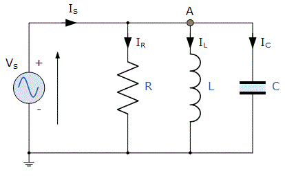

Consider a RLC circuit in which resistor, inductor and capacitor are connected in parallel to each other. This parallel combination is supplied by voltage supply, VS. This parallel RLC circuit is exactly opposite to series RLC circuit. In series RLC circuit, the electric current flowing through all the three components i.e the resistor, inductor and capacitor remains the same, but in parallel circuit, the voltage across each element remains the same and the electric current gets divided in each component depending upon the impedance of each component. That is why parallel RLC circuit is said to have dual relationship with series RLC circuit.

The total current, IS drawn from the supply is equal to the vector sum of the resistive, inductive and capacitive current, not the mathematic sum of the three individual branch currents, as the electric current flowing in resistor, inductor and capacitor are not in same phase with each other; so they cannot be added arithmetically. Apply Kirchhoff's electric current law, which states that the sum of electric currents entering a junction or node, is equal to the sum of electric current leaving that node we get,
Phasor Diagram of Parallel RLC Circuit
Let V is the supply voltage.
IS is the total source current.
IR is the electric current flowing through the resistor.
IC is the electric current flowing through the capacitor.
IL is the electric current flowing through the inductor.
θ is the phase angle difference between supply voltage and current.
For drawing the phasor diagram of parallel RLC circuit, voltage is taken as reference because voltage across each element remains the same and all the other currents i.e IR, IC, IL are drawn relative to this voltage vector. We know that in case of resistor, voltage and electric current are in same phase; so draw electric current vector IR in same phase and direction to voltage. In case of capacitor, electric current leads the voltage by 90° so, draw IC vector leading voltage vector, V by 90°. For inductor, electric current vector IL lags voltage by 90° so draw IL lagging voltage vector, V by 90°. Now draw the resultant of IR, IC, IL i.e electric current IS at a phase angle difference of θ with respect to voltage vector, V.
Simplifying the phasor diagram, we get a simplified phasor diagram on right hand side. On this phasor diagram, we can easily apply Pythagoras's theorem and we get,
Impedance of Parallel RLC Circuit
From the phasor diagram of parallel RLC circuit we get,
Substituting the value of IR, IC, IL in above equation we get,
On simplifying,
As shown above in the equation of impedance, Z of a parallel RLC circuit each element has reciprocal of impedance (1/Z) i.e admittance, Y. For solving parallel RLC circuit it is convenient if we find admittance of each branch and the total admittance of the circuit can be found by simply adding each branch's admittance.
Admittance Triangle of Parallel RLC Circuit
In series RLC circuit, impedance is considered, but as stated in introduction on parallel RLC circuit, it is exactly opposite to that of series RLC circuit; so in Parallel RLC circuit, we will consider admittance. The impedance Z has two components; resistance, R and reactance, X. Similarly, admittance also has two components such as conductance , G (reciprocal of resistance, R) and suspceptance, B (reciprocal of reactance, X). So admittance triangle of parallel RLC circuit is completely opposite to that of series impedance triangle.
Resonance in Parallel RLC Circuit
Like series RLC circuit, parallel RLC circuit also resonates at particular frequency called resonance frequency i.e. there occurs a frequency at which inductive reactance becomes equal to capacitive reactance but unlike series RLC circuit, in parallel RLC circuit the impedance becomes maximum and the circuit behaves like purely resistive circuit leading to unity electrical power factor of the circuit.
 by
by